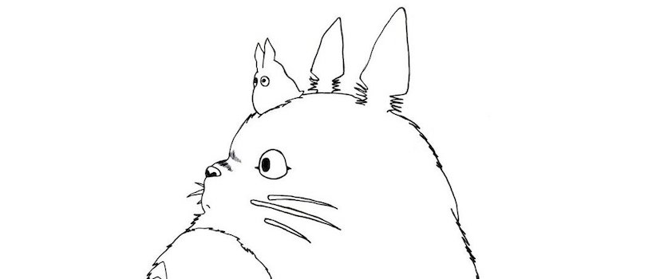

So you think you know everything about the Studio Ghibli films, eh?
Lets see about that....
Question 1:
In 'Nausicaa of the Valley of the Wind,' what threatens the existence of humans?
The toxic jungle threatens the existence of humans.
Question 2:
How do Mei, Satsuki and their father make the sootballs leave in 'My Neighbor Totoro'?
They scream.
Question 3:
What animal do Chirhiro's parents both get turned into in 'Spirited Away'?
They become pigs.
Question 4:
What is Kiki's cat named in 'Kiki's Delivery Service'?
Jiji
Question 5:
What natural disaster happened during 'Ponyo on the Cliff by the Sea'?
A Tsunami occurs and floods everything.
Question 6:
What were the pirates trying to steal from Sheeta in 'Laputa: Castle in the Sky'?
They were after her magical necklace.
Question 7:
Where was Ashitaka's infection spreading from in 'Princess Mononoke'?
Ashitaka's arm was infected.
Question 8:
What color did Nausicaa's dress change in 'Nausicaa of the Valley of the Wind'?
It turned blue.
Question 9:
What does Arietty use to hold her hair back in 'The Secret World of Arietty'?
A clothespin.
Question 10:
What is the flaming creature's name in 'Howl's Moving Castle?'
His name was Calcifer.
Question 11:
In The Wind Rises, why can't Jiro become a pilot?
His nearsightedness was the main cause.
Question 12:
Which character from Tales of Earthsea says, "Life without death is not life."
Haitaka.